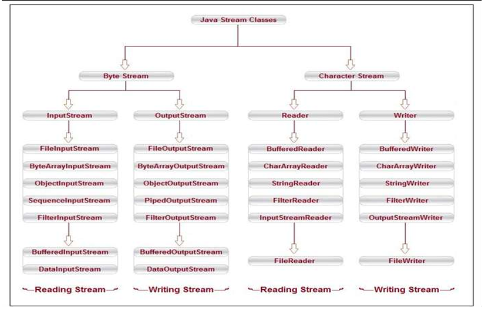

Mastering Byte Streams vs Character Streams & High-Level Architecture of all java.io Classes
Java divides the entire universe of I/O streams into two fundamentally distinct categories based on the unit of data being transferred:
| Comparison Factor | Byte Streams (Binary Oriented) | Character Streams (Text Oriented) |
|---|---|---|
| Base Unit | 8-bit Bytes (1 Byte = 8 bits, 0 to 255) |
16-bit Unicode Characters (2 Bytes, UTF-16) |
| Root Superclasses | InputStream (Read) & OutputStream (Write) |
Reader (Read) & Writer (Write) |
| Naming Suffix | End with *Stream (e.g. FileInputStream) |
End with *Reader or *Writer (e.g. FileReader) |
| Best Used For | Binary Files: Images (PNG, JPG), Audio (MP3), Videos (MP4), PDFs, Zip files, compiled bytecode. | Human Readable Text: Plain text (.txt), Source code (.java), CSV files, JSON, XML, HTML. |
| Indian Context Relevance | Used to copy Aadhaar QR code images or PDF bank statements byte-for-byte. | Used to read/write passenger names in Indian languages (Hindi: रोहित, Telugu: రోహిత్, Tamil: ரோஹித்) safely without corrupting characters. |
InputStream, characters get split in half and turn into garbage question marks (???). Character Streams (Reader & Writer) automatically handle character encoding and decode whole letters cleanly.
Here is the standard, authoritative visual architecture of Java Stream Classes. Click the diagram to inspect in full zoom:

Notice how beautifully symmetric Java's I/O framework is. There are 4 core abstract classes at the top:
| Class Name | Category | Role | Real-World Example |
|---|---|---|---|
FileInputStream |
Byte • Input | Reads raw bytes from file on disk. | Reading Aadhaar QR code image (.png) or audio recording. |
FileOutputStream |
Byte • Output | Writes raw bytes to file on disk. | Saving downloaded SBI PDF bank statement to disk. |
BufferedInputStream |
Byte • Input | Wraps another byte stream with an internal 8KB buffer in RAM. | Fast streaming of large video/binary datasets. |
BufferedOutputStream |
Byte • Output | Batches bytes in RAM buffer before flushing to disk. | High-throughput logging of binary telemetry packets. |
DataInputStream / Out |
Byte • In/Out | Reads/writes Java primitive types (readInt(), writeDouble()) in binary format. |
Storing game high scores or encrypted financial numbers in compact binary. |
ObjectInputStream / Out |
Byte • In/Out | Object Serialization & Deserialization. | Saving whole Employee or Order Java objects to disk. |
InputStreamReader |
Char • Input | The Bridge: Reads bytes and decodes them into characters using a charset (UTF-8). | Wrapping System.in: new InputStreamReader(System.in). |
OutputStreamWriter |
Char • Output | The Bridge: Encodes characters into bytes before writing to a byte stream. | Writing UTF-8 text directly to network socket output stream. |
FileReader |
Char • Input | Convenience class extending InputStreamReader for reading text files. |
Reading simple config files (config.properties). |
FileWriter |
Char • Output | Convenience class extending OutputStreamWriter for writing text files. |
Writing customer receipt notes in plain text. |
BufferedReader |
Char • Input | Buffers characters and offers the invaluable readLine() method. |
Processing IRCTC passenger manifest CSV line-by-line. |
BufferedWriter |
Char • Output | Buffers written characters and provides newLine() and flush(). |
Writing large Swiggy daily order ledger files with fast performance. |
InputStreamReader and OutputStreamWriter connect the Byte world with the Character world.BufferedReader or BufferedWriter for real production performance!